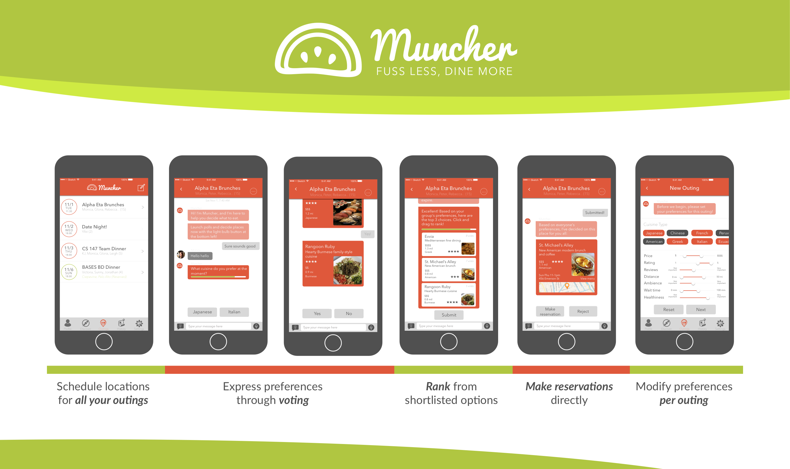
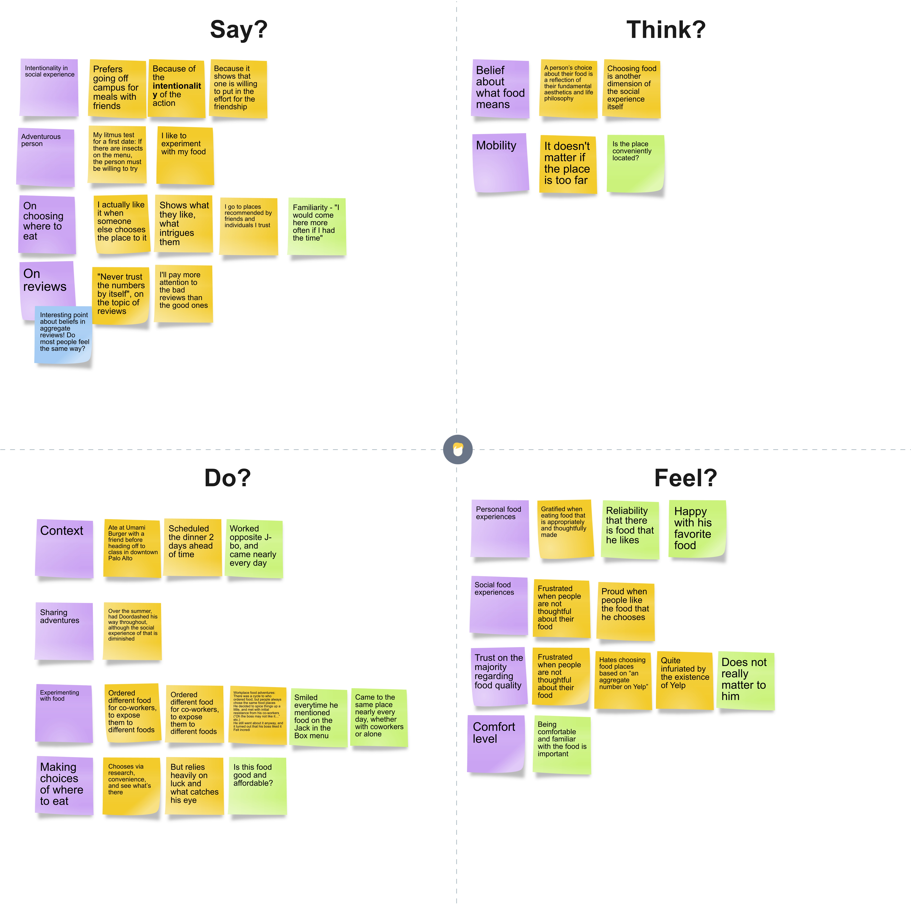
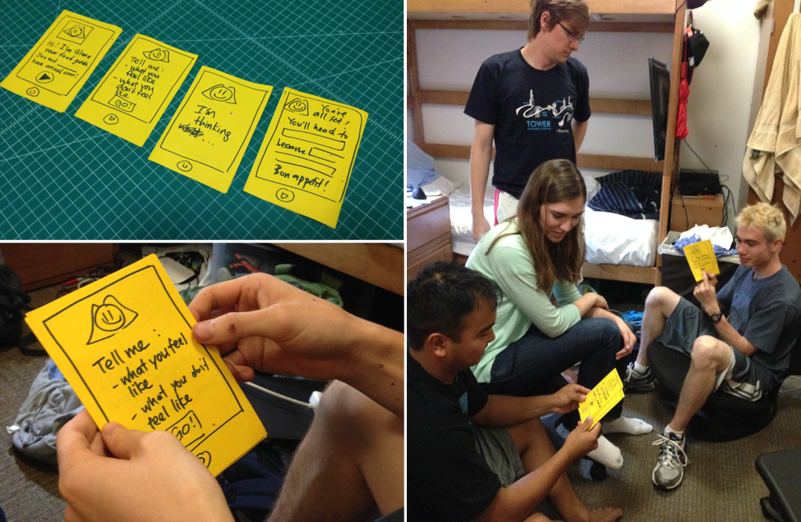
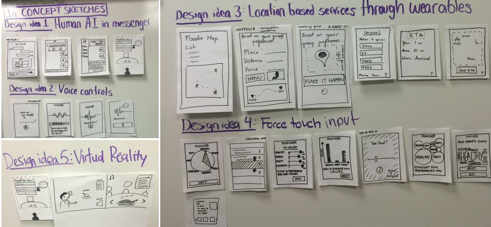
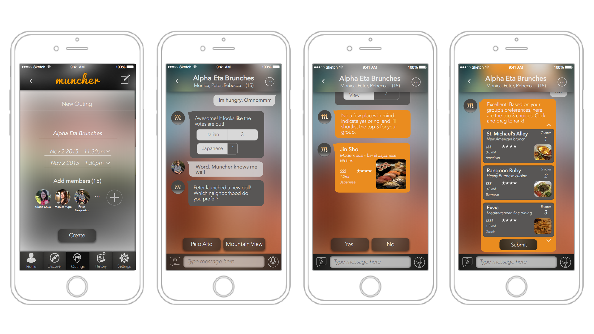
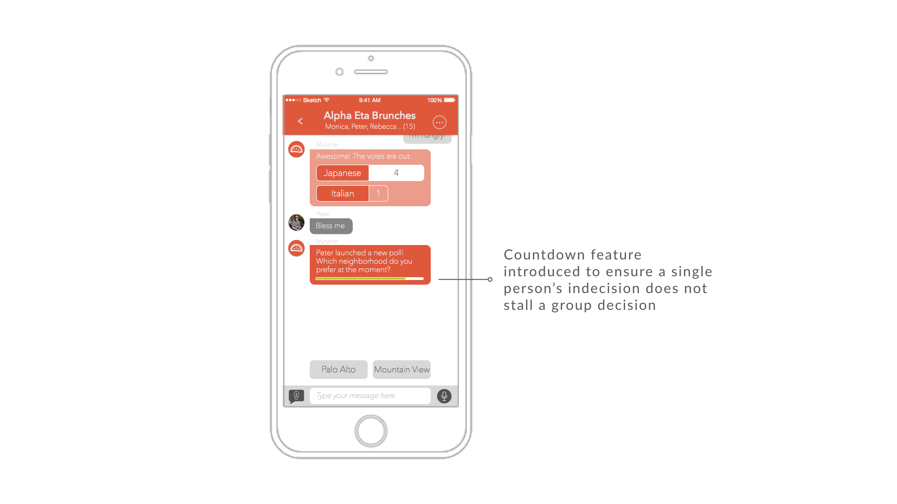

Muncher
Muncher is a human-based AI assistant in a messaging UI, that synthesizes your group's preferences and picks the best place for everyone.
As the only designer on the team, I was in charge of UX and visual design of the product. This project won Best Poster and Best Demo (1st out of 62 teams) during Stanford's annual dt+UX Project Fair.
- Fall 2015
- Ethnographic Interviews
- User Personas
- UI/UX Design
- Heuristic Evaluation
- Only designer in team of 4
- Website
What to eat? Anything. Really? Not really.
Many of us face the first-world problem of being unable to decide where to eat, when a group decides to get a meal together. Sometimes, it gets very frustrating. How might we make that group decision-making process stress-free?
-

Ethnographic Interviews and Observations
Since our main target audience were restaurant goers, we conducted observations inside and outside restaurants, and ethnographic interviews with a wide variety of restaurant goers. In our interviews, we focused primarily on understanding what choices were most important for individuals when they chose a restaurant to visit.
-

User Personas
We soon realized that there were 3 different types of people:
- Adventurous foodie
Food is an integral part of his life, and choosing a restaurant is a serious decision. He enjoys letting his friends choose the place to eat because he feels like these choices reveal interesting facets of a friend's history, personality and culture.
- Social butterfly
For her, a meal is a time to socialize, so the company matters more than the food or location. To her, as long as she doesn't hate the food, anything goes.
- Polite company
They might be going out in a group that they are only acquaintances with. In these cases, they do not want to be calling the shots on where to eat, preferring the 'host' (if any) to make the decision.
The main insight: people were generally reluctant to be the person making the decision, instead preferring someone else to decide where to eat.
Experience Prototyping
Building on the insight that many people tend to be passive decision makers when it comes to deciding where to eat, we brainstormed multiple ideas, and settled on the idea of introducing a neutral third-party mediator into the decision-making process.
I created a rapid paper prototype, pretended to be the 'genie' behind the interface, and tested the idea of a third-party 'genie' in group settings.
-

Defining Interaction Models
We explored different interaction models for a third-party 'genie', exploring options from virtual reality to location-based services. Eventually, we decided on a messaging UI to create a sense of human-ness to the application.
-

Iterative Design and Testing
We cycled through multiple iterations and user tests, running through heuristic evaluations to identify usability issues in the later stages as well. Besides simplifying the visual design, one notable problem we fixed was preventing one user's indecision from stalling the entire decision-making process by introducing an inline countdown feature.
-

-

This project won Best Poster and Best Demo (1st out of 62 teams) during Stanford's annual dt+UX Project Fair. It was subsequently chosen for a poster showcase at the CHI 2016 Reception hosted by the Stanford HCI Department.